통계로 세상읽기
한국방송통신대학교 통계ㆍ데이터과학과
이긍희 교수
목차
- 우리가 사는 세상을 어떻게 살펴볼까
- 불확실한 세상을 어떻게 이해할까
- 통계로 어떻게 추측하고, 판단할까
우리가 사는 세상을 어떻게 살펴볼까
통계와 통계학 · 데이터와 지수 · 국가통계
통계와 통계학은 무엇인가
통계(Statistics)와 통계학의 기본 개념 및 사회적 역할
1. 통계와 통계학은 무엇인가
빅데이터 시대
- 우리의 일상생활은 스마트 기기나 센서 등을 통해 측정되어 데이터로 축적, 정리 → 빅데이터 시대
1. 통계와 통계학은 무엇인가
데이터
- 데이터: 수집된 원시정보, 단순 사실(fact)
- 조사: 대상집단 일부를 선정해 조사
- 실험: 특정 조건을 설정하여 효과 측정
- 관찰: 행정 보고, 센서 데이터처럼 자동으로 생성된 정보
1. 통계와 통계학은 무엇인가
통계
- 통계(statistics): 특정 집단의 특성을 요약·예측하는 데 사용되는 숫자정보 → 데이터를 평균, 지수 형태로 요약
- 소비자물가지수, 경제성장률, 강수확률, 네이버 트렌드 등
| 분야 | 통계 (숫자정보) |
|---|---|
| 날씨 | 강수확률, 기온, 불쾌지수, 빨래지수 |
| 경제 | GDP(국내총생산), 인플레이션율, 주가지수, 환율, 금리, 실업률 |
| 여론조사 | 정당지지율, TV 시청률 |
| 마케팅 | 소비자 만족도 |
| 스포츠 | 타율, 장타율, 패스 성공률 |
| 교육 | IQ, 평균 점수 등 |
1. 통계와 통계학은 무엇인가
융건릉의 식목과 다산 정약용
- 1789년∼1795년까지 현륭원 주변 8개 고을 식목
- 정조는 다산 정약용에게 식목 관련 내역 정리 명령
- 다산: 식목 장부 → 스프레드시트 방식 요약
- 7년 12번 식목 → 12번 가로, 8개 고을 세로 정리
- 총수: 1,200만 9,712그루
1. 통계와 통계학은 무엇인가
통계학의 정립
- 통계가 확률이론과 결합
- → 통계로 세상을 체계적으로 이해하고 의사결정할 수 있는 방법의 학문인 통계학(statistics) 정립
1. 통계와 통계학은 무엇인가
통계학의 정의
- 통계학: 데이터의 공정한 수집, 정리·요약, 미지의 사실에 대한 추측 및 의사결정하는 방법의 학문
- 데이터의 수집과 분석: 표본조사, 실험
- 데이터의 요약과 설명: 1인당 국민소득, 타율과 연봉의 상관관계
- 데이터로부터 결론 도출: 경제성장률 예측, 신약 승인
1. 통계와 통계학은 무엇인가
통계학의 역할
- 과학철학자 해킹(I. Hacking)
- "통계학자는 기술을 발견하여 세상을 바꾼 것이 아니라, 생각하는 방법이나 자기 견해를 내세우는 방법을 변화시켜 세상을 바꾸었다."
1. 통계와 통계학은 무엇인가
통계와 통계학
- 영문 명칭 모두 Statistics
- 통계: 해당 분야 지식이 중요, 통계학이 반드시 필요하지는 않음
- 통계학: 해당 분야를 체계적으로 분석·예측
1. 통계와 통계학은 무엇인가
통계 리터러시
- H. G. Wells: 통계 리터러시(statistical literacy)
- "통계적으로 생각하고 판단하는 것은 읽기나 쓰기 능력과 마찬가지로 유능한 시민이 되기 위해 반드시 갖추어야 할 능력이다."
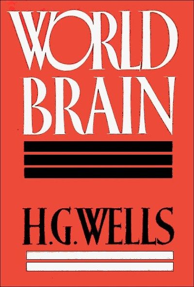
데이터를 통계로 어떻게 만들까
데이터의 분포 · 중심위치 · 산포 · 지수
2. 데이터를 통계로 어떻게 만들까
데이터를 어떻게 살펴볼까
통계학 점수와 수학 점수
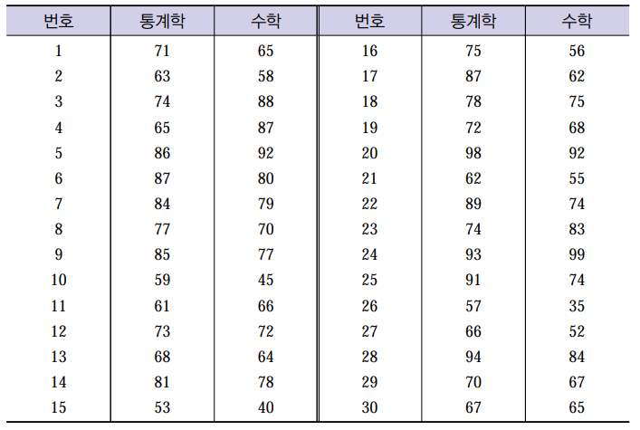
2. 데이터를 통계로 어떻게 만들까
데이터를 어떻게 살펴볼까
통계학 점수와 수학 점수 도수분포표와 히스토그램
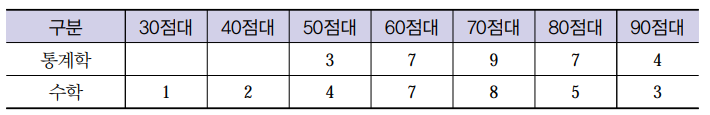
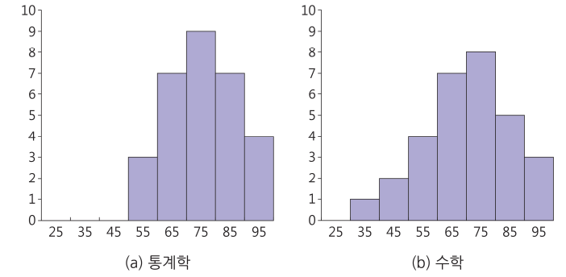
2. 데이터를 통계로 어떻게 만들까
데이터 시각화
나이팅게일의 장미도표
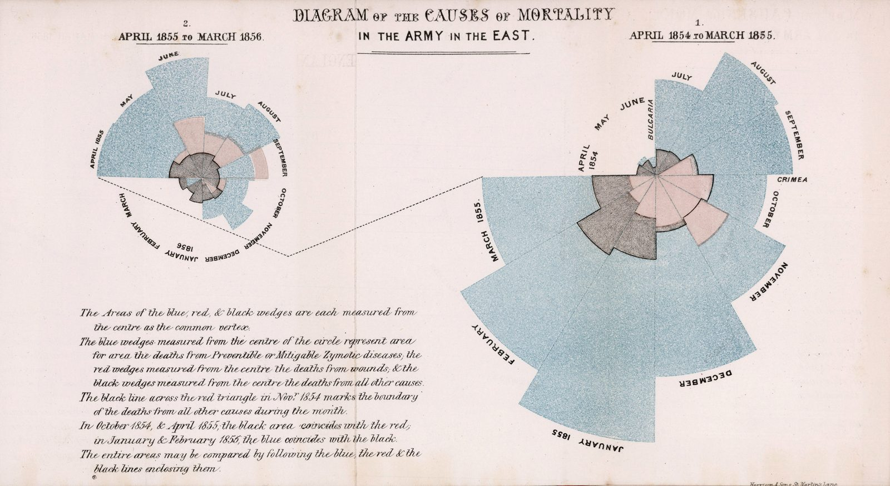
출처: Wikimedia Commons (Nightingale-mortality)
2. 데이터를 통계로 어떻게 만들까
데이터의 유용한 정보
- 중심위치
- 평균(mean), 중앙값(median), 최빈값(mode)
- 산포
- 분산(variance), 표준편차(standard deviation), 범위(range)
2. 데이터를 통계로 어떻게 만들까
데이터의 중심위치
- 19세기 이전: 평균은 유용한 정보를 버리고 잘못된 정보가 섞일 수 있다고 인식
- 19세기: 과학 관측에서 데이터 값들이 평균 중심으로 분포한다는 사실 규명 → 다른 분야 확산
- 케틀레(A. Quételet): 사회 데이터를 모아 정리하며 '평균인' 개념 도입
2. 데이터를 통계로 어떻게 만들까
데이터의 중심위치
- 20세기: 평균은 민주주의, 집단지성, 크라우드소싱 등으로 확장
- 1906년 골턴의 황소 무게 추정 실험
- 평균은 국가통계 등 각종 통계 작성의 핵심 기반
- 1인당 국민소득, 평균기온, 소비자물가지수, 주가지수
2. 데이터를 통계로 어떻게 만들까
데이터의 중심위치
- 중앙값(Median): 크기 순서대로 정렬했을 때 중앙에 위치하는 값
- 최빈값(Mode): 관심 대상 데이터 중 빈도수(도수)가 가장 큰 값
- 질적 데이터의 대푯값으로 유용하게 활용 (예: 선거 후보자 선출)
2. 데이터를 통계로 어떻게 만들까
데이터의 중심위치
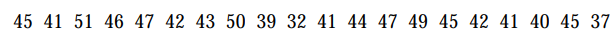
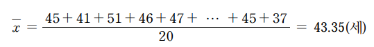
2. 데이터를 통계로 어떻게 만들까
데이터의 산포
- 산포의 측정 지표
- 범위(Range): 최댓값과 최솟값의 차이
- 분산(Variance): (관찰값 - 평균)의 편차제곱합을 (데이터 수 - 1)로 나눈 값
- 표준편차(Standard Deviation): 분산의 양의 제곱근
2. 데이터를 통계로 어떻게 만들까
산포의 측정
자녀 수 데이터의 범위, 분산 및 표준편차
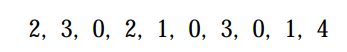
2. 데이터를 통계로 어떻게 만들까
지수의 개념
- 지수(Index): 시간의 경과에 따라 수량이나 가격 등의 종합적 변화를 파악하기 위한 통계 지표
- 가격지수와 물량지수로 대별
- 산출 공식: 라스파이레스(Laspeyres)식, 파셰(Paasche)식, 피셔(Fisher)식
2. 데이터를 통계로 어떻게 만들까
물가지수
물가지수 산출 예시
| 품목 | 기준연도 (2020) 물량 | 기준연도 가격 | 비교연도 가격 |
|---|---|---|---|
| 사과 | 100 | 1,000 | 1,500 |
| 배 | 50 | 1,500 | 2,000 |
국가통계로 본 우리나라
국가통계의 필요성과 역할 · 인구 변화 · GDP 및 CPI
3. 국가통계로 본 우리나라
국가통계의 역할
- 국가통계: 국가 상태를 측정하여 숫자로 요약한 핵심 지표
- 국가 정책 및 중장기 발전계획 수립의 기초 자료
- 제도적 틀을 유지하고 국민적 합의를 도출하기 위한 국가경영 인프라
- 영국 정부의 통계에서의 신뢰의 구축 보고서
- "국가통계는 믿음을 기저로 하는 민주주의 제도에서 핵심적 역할"
3. 국가통계로 본 우리나라
인구
- 인구: 출생, 사망, 국가 간 이동을 통해 결정
- 인구주택총조사 및 장래인구추계
- 심각한 저출산 및 초고령화 현상 분석
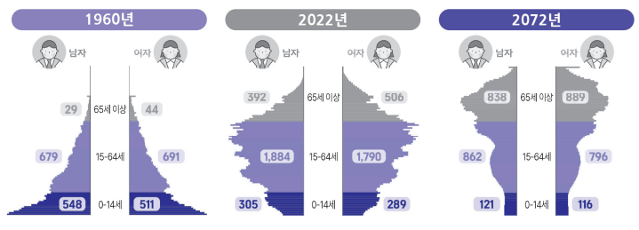
3. 국가통계로 본 우리나라
국민소득통계
- GDP 통계: 1930년대 초 대공황 극복 과정에서 개발, '20세기 최고의 발명' 중 하나로 평가
- 경제 규모: 1953년 13.5억 달러 → 2022년 약 1.67조 달러
- 1인당 소득: 1953년 67달러 → 2017년 3만 달러 돌파
- 1953~2023년 연평균 경제성장률: 약 6.9%
3. 국가통계로 본 우리나라
소비자물가지수
- 소비자물가지수(CPI): 일상생활을 영위하기 위해 구입하는 재화와 서비스 가격 변동 측정
- 인플레이션율: 통화정책 및 한국은행 기준금리 결정의 기준
- 1965년 2.61 → 2023년 111.59 (약 43배 상승)
불확실한 세상을 어떻게 이해할까
우연과 확률 · 조건부 확률과 독립 · 정규분포
확률은 무엇인가
우연과 확률의 정의 · 객관적 확률과 주관적 확률
1. 확률은 무엇인가
우연과 확률
- 불확실한 현실에서 동일한 사건을 반복 관찰하면 상대적 발생 비율이 일정하게 수렴 → 확률
- 어떤 사건이 일어날 가능성을 0과 1 사이의 실수값으로 나타낸 것
1. 확률은 무엇인가
동전 던지기와 확률
고전적 정의 vs 빈도론적 정의
- 동전 던지기(확률 실험)의 결과 공간: {앞면, 뒷면}
- 고전적 정의: 모든 가능한 결과의 발생 가능성이 대등할 때 (1/2 = 50%)
- 빈도론적 정의: 시행 횟수를 무한히 반복할 때 특정 결과의 상대도수가 50%에 수렴
1. 확률은 무엇인가
생명보험과 확률
- 생명보험: 개별 계약자의 사망 시점은 알 수 없으나 대규모 집단의 사망률은 일정
- 대수의 법칙을 기반으로 생명표 작성
- 불확실성을 통제 가능한 재무적 위험으로 변환
1. 확률은 무엇인가
물리학과 우연
- 고전물리학 (17~19세기): 결정론적 세계관 (우연 배제)
- 현대물리학 (20세기~): 미시 세계의 본질적 불확실성 규명 → 양자역학
- 우연과 확률은 자연계를 설명하는 가장 근본적인 법칙
1. 확률은 무엇인가
확률의 정의
- 객관적 확률: 반복 가능한 실험과 실제적 가능성에 기반 (빈도론적, 공리적 접근)
- 주관적 확률: 특정 사건에 대한 개인적 믿음이나 확신의 강도 (베이즈주의 접근)
1. 확률은 무엇인가
주관적 확률과 인지 편향
- 우리의 일상적 경험은 횟수가 적어 주관적 확률에 강하게 의존
- 머피의 법칙: 심리적 선택과 확증 편향의 예시
- 급하게 택시를 잡으면 반대편 차선에만 나타남
- 내가 선 대기 줄만 유독 느리게 줄어듦
1. 확률은 무엇인가
주관적 확률의 수렴
- 동일한 커피를 가격 표기만 다르게 제공했을 때 비싼 커피가 더 맛있다고 응답
- 경험과 블라인드 테스트 횟수가 누적되면서 본래의 품질(객관적 사실) 인식
- 정보와 관측이 늘어남에 따라 주관적 확률은 객관적 확률로 수렴
조건부 확률과 독립
조건부 확률과 베이즈 정리 · 사건의 독립성
2. 조건부 확률과 독립
조건부 확률
- 조건부 확률: 특정 정보(사건 B)가 주어졌을 때 또 다른 사건 A가 일어날 확률
- 수식 표기: P(A|B) = P(A ∩ B) / P(B)
- 사전 정보에 따라 불확실성이 조정됨
2. 조건부 확률과 독립
폐질환과 흡연
- 전체 집단 중 폐질환 유병률: 100 / 2,000 = 5%
- 흡연자 집단 내 폐질환 유병률: 70 / 400 = 17.5%
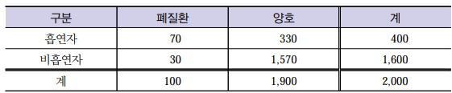
2. 조건부 확률과 독립
조건부 확률과 베이즈 정리
- 새로운 증거가 제시되었을 때 기존의 사전확률을 사후확률로 갱신하는 체계적 방법
2. 조건부 확률과 독립
베이즈 정리의 응용
- 진단 키트의 민감도와 특이도, 그리고 실제 질병 유병률에 기초한 실제 감염 사후확률 계산
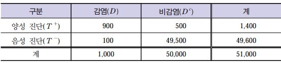
2. 조건부 확률과 독립
O.J. 심슨 재판과 조건부 확률
- 가정 폭력 전력과 살인 사건 간의 올바른 조건부 확률 추론의 중요성
2. 조건부 확률과 독립
독립 (Independence)
- 한 사건의 발생이 다른 사건이 일어날 확률에 아무런 영향을 주지 않는 상태
- P(A|B) = P(A) 성립 시 두 사건은 상호 독립
복권과 확률
로또 복권의 구조와 당첨 확률 · 확률변수와 기댓값
3. 복권과 확률
로또 복권의 구조
- 45개 숫자 중 순서 없이 6개를 맞히는 조합
- 가능한 조합의 수: 45C6 = 8,145,060가지
- 1등 당첨 확률: 1 / 8,145,060 (약 0.0000123%)
- 1~5등 전체 당첨 확률 합계: 약 2.36%
3. 복권과 확률
로또 복권에 대한 통계적 고찰
- 1등 당첨 확률이 극히 희박함에도 매회 여러 명의 당첨자가 나오는 이유: 대규모 구매량
- 과거 당첨 번호 추첨 결과를 바탕으로 다음 당첨 번호를 예측할 수 있는가? (독립시행의 원리)
- 로또 명당의 실체: 단순 판매량이 많은 매장
3. 복권과 확률
복권의 기대 금액
- 기대 금액: 1장 구매 시 기대할 수 있는 당첨 환급금의 평균값
- 기댓값 산출과 복권 발행 수익 배분 구조
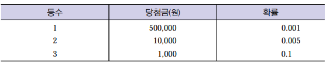
3. 복권과 확률
확률변수
- 확률변수: 확률 실험의 표본공간 각 원소를 실수값으로 대응시키는 함수
- 이산형 확률변수: 취할 수 있는 값을 셀 수 있는 변수 (사망자 수, 로또 일치 개수 등)
- 연속형 확률변수: 특정 구간 내 모든 실수값을 취할 수 있는 변수 (키, 몸무게, 시간 등)
3. 복권과 확률
확률변수의 기댓값
- 확률변수가 가질 수 있는 값들에 해당 확률을 가중치로 곱하여 합산한 무게중심
정규분포와 그 응용
정규분포의 성질 · 중심극한정리 · 교육 평가 응용
4. 정규분포와 그 응용
정규분포의 발견 역사
- 1738년 드 무아브르(de Moivre): 이항분포 근사식 규명
- 1809년 가우스(Gauss): 천문 관측 오차의 분포 모델링 (가우스 분포)
- 1810년 라플라스(Laplace): 중심극한정리 증명
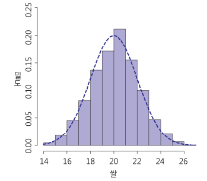
4. 정규분포와 그 응용
정규분포의 형태와 특성
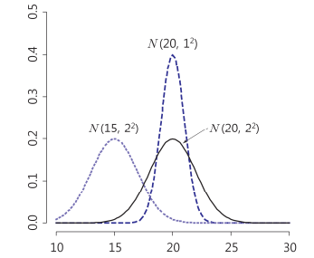
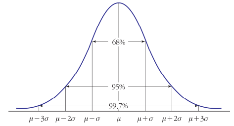
4. 정규분포와 그 응용
중심극한정리
- 모집단의 분포 형태에 관계없이 표본 크기(n)가 충분히 크면 표본평균의 분포는 정규분포에 근사
- 통계적 추론의 수학적 기반 제공
4. 정규분포와 그 응용
정규분포의 응용
수능 등급제와 표준정규분포 확률 영역
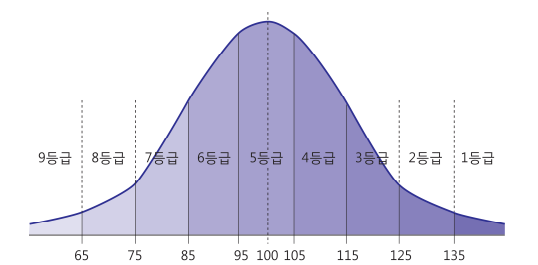
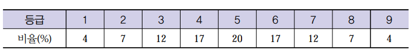
통계로 어떻게 추측하고, 판단할까
표본추출과 통계적 추정 · 가설검정의 원리와 판단
세상을 어떻게 추측할까
모집단과 표본 · 통계적 추론의 기본 체계
1. 세상을 어떻게 추측할까
측정의 시대
- 18~19세기 유럽: 온갖 사회·자연 현상을 실측하여 수치화
- 관측 데이터를 체계적으로 수집했을 때 정규분포 양상을 확인
1. 세상을 어떻게 추측할까
통계학의 시작
- 골턴(Galton), 피어슨(Pearson)에 의해 통계학 체계화
- 런던대(UCL) 세계 최초 통계학과 설립
- 세계 최초 통계학술지 <Biometrika> 창간
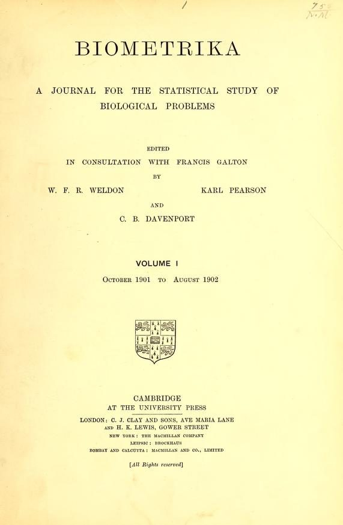
1. 세상을 어떻게 추측할까
통계학의 출발점
- 모집단(Population): 연구 및 관심의 대상이 되는 전체 집단
- 표본(Sample): 모집단에서 실제로 추출하여 관측한 데이터
- 표본 데이터를 요약하여 모집단의 모수(Parameter)를 추측
1. 세상을 어떻게 추측할까
통계적 추론의 구분
- 통계적 추정(Estimation): 표본의 정보를 이용하여 미지의 모수를 수치로 추정
- 가설검정(Hypothesis Test): 모수에 대한 잠정적 주장을 세운 후 표본의 유의성을 판정
1. 세상을 어떻게 추측할까
통계적 추정의 예시
- 고3 학생 평균 키 추정
- 모집단: 전국 고등학교 3학년 학생 전체
- 표본: 표본 추출된 1,000명의 학생
1. 세상을 어떻게 추측할까
통계적 추론의 전체 흐름
모집단 ➔ 표본추출 ➔ 자료분석 ➔ 통계적 추론
- 표본에서 도출된 통계량을 기초로 오차 한계를 계산하여 모집단 특성을 귀납적으로 판단
통계학의 등장과 발전
통계학의 역사적 발전 단계 · 수리통계학의 정립과 데이터과학
2. 통계학의 등장과 발전
통계학의 시대별 흐름
- 17~18세기: 확률의 시대 (Pascal, Bernoulli, Bayes)
- 18세기 중~19세기 중: 오차이론의 시대 (Laplace, Gauss)
- 19세기 후반: 응용통계의 태동 (Quetelet, Galton)
2. 통계학의 등장과 발전
현대 통계학의 수리적 정립
- K. Pearson: 카이제곱 검정 (1900)
- Gosset: 소표본 t분포 (1908)
- R. A. Fisher: 실험계획법, 최대가능도추정법, 분산분석 (1920s)
- Neyman & Pearson: 가설검정론, 신뢰구간 (1930s)
- Wald: 통계적 결정이론 (1950)
2. 통계학의 등장과 발전
통계학 패러다임의 변천
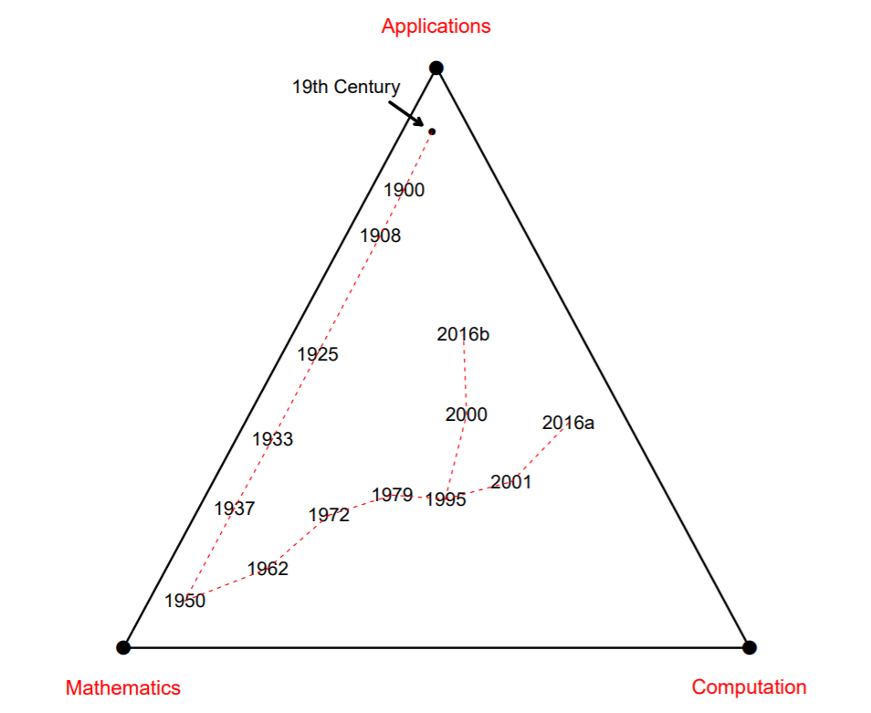
2. 통계학의 등장과 발전
통계학과 데이터과학
- 1960년대 컴퓨팅의 도입과 탐색적 데이터 분석(EDA)
- 빅데이터와 기계학습(Machine Learning)의 결합
- 수학적 연역 모형에서 대규모 데이터 기반의 알고리즘적 예측 모형으로 진화
좋은 추측법은 무엇인가
통계적 추론의 가정과 원리 · 점추정과 구간추정
3. 좋은 추측법은 무엇인가
통계학의 기본 전제
- 세상은 근본적으로 불확실하다. → 확률분포
- 세상을 모두 측정할 수 없다. → 표본추출
→ 통계적 추론
3. 좋은 추측법은 무엇인가
통계적 추론의 양대 축
- 추정: 표본의 관측 데이터로부터 모수를 가장 그럴듯하게 계산
- 검정: 세운 가설 하에서 관측된 결과가 발생할 확률이 극히 낮다면 기존 가설을 기각
3. 좋은 추측법은 무엇인가
통계적 추정과 최적의 통계량
- 모집단의 모수를 가장 오차 없이 설명할 수 있는 표본 통계량 선정
3. 좋은 추측법은 무엇인가
바람직한 추정량의 조건
- 불편성(Unbiasedness): 추정량의 기댓값이 참된 모수와 일치
- 효율성(Efficiency): 여러 불편추정량 중 분산이 가장 작음
- 일치성(Consistency): 표본 크기가 무한히 커질수록 모수에 수렴
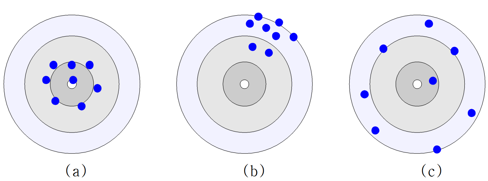
3. 좋은 추측법은 무엇인가
최대가능도법 (Maximum Likelihood)
- 가능도 함수를 최대화하는 추정량을 찾음
- 정규분포 모평균: 최대가능도 추정량 = 표본평균
3. 좋은 추측법은 무엇인가
점추정과 구간추정
- 점추정: 모수의 단일한 대표값 제시
- 구간추정: 신뢰수준(예: 95%) 하에서 모수를 포함할 것으로 기대되는 오차 구간 계산
3. 좋은 추측법은 무엇인가
여론조사의 통계적 해석
- 전국 성인 1,000명 설문조사 결과
- 점추정: 지지율 42%
- 표본오차: ±3.1%p (95% 신뢰수준)
- 구간추정: 95% 신뢰구간 (38.9%, 45.1%)
가설검정
가설설정 · 오류의 종류 · 유의확률과 판정 절차
4. 가설검정
가설의 설정
- 귀무가설(H0): 기존의 사실 또는 차이가 없다는 영가설
- 대립가설(H1): 표본을 통해 입증하고자 하는 새로운 주장
4. 가설검정
법정 재판과 가설검정의 비유
- 귀무가설 = "피고인은 무죄이다" (무죄추정의 원칙)
- 대립가설 = "피고인은 유죄이다"
- 합리적 의심을 배제할 정도로 명백한 증거가 제시될 때만 유죄 선고
4. 가설검정
가설검정의 오류
| 구분 | 귀무가설 참 (무죄) | 귀무가설 거짓 (유죄) |
|---|---|---|
| 귀무가설 채택 (무죄 방면) | 올바른 판결 | 제2종 오류 (β) |
| 귀무가설 기각 (유죄 처벌) | 제1종 오류 (α) | 올바른 판결 (검정력) |
4. 가설검정
이노센스 프로젝트
- DNA 감식을 통해 억울한 사형수·수형자의 무죄 입증
- 제1종 오류(무고한 사람을 유죄로 처벌) 발생의 위험성을 경고
4. 가설검정
유의수준의 결정
- "100명의 범인을 놓치더라도 한 명의 무고한 자를 처벌해서는 안 된다."
- 제1종 오류의 최대 허용 한계인 유의수준(α, 대개 5% 또는 1%)을 먼저 정하고, 그 안에서 제2종 오류를 줄이는 검정법
4. 가설검정
통계적 가설검정의 4단계 절차
- 가설 수립 (귀무가설 vs 대립가설)
- 유의수준(α) 설정 및 검정통계량 결정
- 표본 관측치 대입을 통한 검정통계량 및 유의확률(p-value) 계산
- 기각역 비교를 통한 통계적 결론 도출
4. 가설검정
유의확률 (p-value)의 해석
- p-value < α: 귀무가설 하에서 관측된 표본이 나타날 확률이 극히 희박함 → 귀무가설 기각
- p-value ≥ α: 관측된 차이가 단순한 표본오차 수준일 수 있음 → 귀무가설 기각 실패
4. 가설검정
동전 던지기 검정 예제
- H0: 동전이 공평하다 (p = 0.5)
- H1: 동전이 편향되어 있다 (p ≠ 0.5)
- 10회 던져 10회 모두 앞면 관측 (p-value = (1/2)10 ≈ 0.001)
- 유의수준 5%보다 훨씬 낮으므로 공평하다는 귀무가설 기각
4. 가설검정
스포크 박사 사건의 배경
- 1968년 미국 베트남전쟁 당시, 육아 분야의 권위자 스포크 박사가 징병 반대 운동으로 기소
- 당시 보스턴 관할 여성 유권자 비율이 과반에 달함에도 불구하고 12명의 최종 배심원에 여성이 0명 선정
4. 가설검정
배심원 선정의 공정성 검정
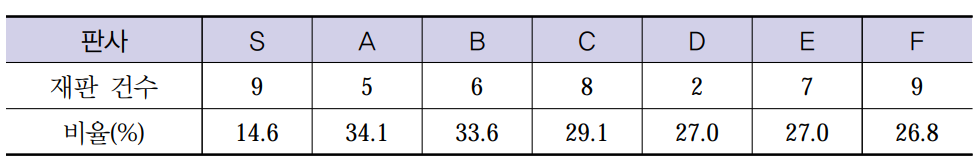
통계적으로 생각하는 법
유튜브 영상
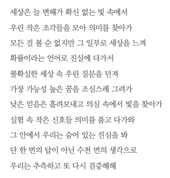
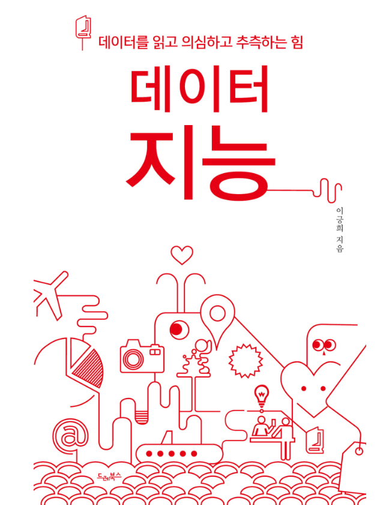